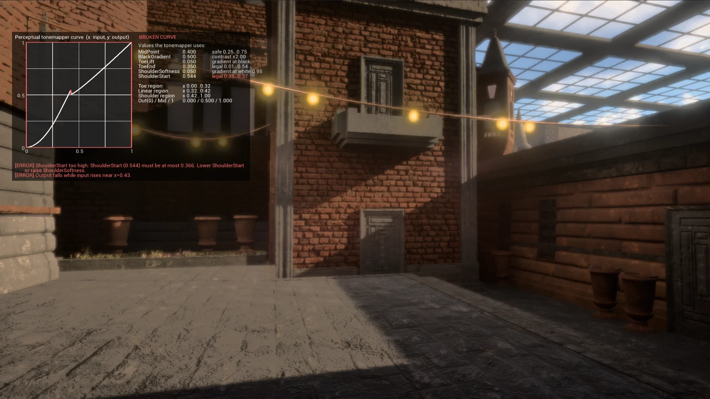

Reference
Console variables
Everything you normally need is on the Advanced Post Process Volume. A few things that don't belong to a single volume are console variables instead. Each one has a description in the editor too, type the name in the console to see it.
General
| Console variable | What it does | Default |
|---|---|---|
r.HLSLens.Enable |
0 turns HLSLens off and 1 back on, without restarting the editor. Your volumes stay in the level and nothing breaks. If you turn it off, also hide or disable your Advanced Post Process Volumes, otherwise the scene can look darker than it should. |
1 |
r.HLSLens.EnableDebugging |
Turns on HLSLens logging, mostly for tracking down bugs. Keep it off in packaged builds. | 0 |
Debug overlays
| Console variable | What it does | Default |
|---|---|---|
r.HLSLens.Tonemapper.Debug |
1 shows the Perceptual tonemapper curve and tells you if it's broken. Editor and development builds only. |
0 |
r.HLSLens.TimeOfDay.Debug |
1 shows the Time-of-Day LUT blend: how much of each LUT is used, the current time and a 24-hour timeline. It's a cheat variable, so it isn't available in shipping builds. |
0 |
r.HLSLens.LensFlare.GhostDebug |
Shows only one ghost, which makes designing a profile a lot easier. Set it to the ghost's index (0 to 11), and -1 to show all of them again. |
-1 |
Tonemapper debug
Some combinations of the contrast settings bend the curve into a shape that doesn't work, and the image can then look distorted. The overlay draws the curve and tells you which values to raise or lower to fix it.


Time-of-Day debug

r.HLSLens.TimeOfDay.Debug 1. See Time-of-Day blending.Bloom and lens flare stability
| Console variable | What it does | Default |
|---|---|---|
r.HLSLens.Bloom.TemporalStabilize |
Stops lens flares and glare from jittering slightly when the camera moves. It keeps them sharp and isn't aggressive, but you can turn it off if it causes problems. | 1 |
r.HLSLens.Bloom.TemporalReproject |
Works with the stabilizer. It keeps glare and bloom from dimming while the camera turns. | 1 |
Fine-tuning
You shouldn't need these often, but they're there if you want more control or need to save a bit of performance.
| Console variable | What it does | Default |
|---|---|---|
r.HLSLens.LensFlare.GhostBorderFade |
Each ghost is a shrunken copy of the whole image, and this soft fade hides its rectangular border. 0.02 is a hard edge, 0.5 very soft. | 0.35 |
r.HLSLens.LensFlare.StreakLevels.Standard |
How many blur levels the streak uses in Standard and Performance quality. Fewer levels give shorter streaks and cost less. | 8 |
r.HLSLens.LensFlare.StreakLevels.Cinematic |
The same for Cinematic quality. | 10 |
r.HLSLens.LensFlare.StreakHalfHeight |
Vertical resolution of the streak. Higher gives a thinner, steadier streak. -1 picks by quality (half in Cinematic, a quarter otherwise), 0 always uses a quarter and 1 always half, at about twice the streak cost. |
-1 |
r.HLSLens.LensFlare.Glare.InputMipLevel |
Which blurred version of the image the glare is built from. Higher values give a blurrier, softer glare. | 1 |
r.HLSLens.LensFlare.Starburst.PSFSize |
Resolution of the Diffraction Starburst shape, 256 or 512. It's cached, so this is mostly memory, not speed. | 512 |
r.HLSLens.LensFlare.Starburst.BigSources |
1 gives big bright objects one starburst in their center. 0 limits starbursts to small lights. |
1 |